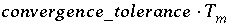
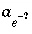

This keyword data block is used to redefine parameters that affect convergence of the numerical method during speciation, batch-reaction, and transport calculations. It also provides the capability to produce long, uninterpretable output files. Hopefully, this data block is seldom used.
Line 0: KNOBS Line 1: -iterations 150 Line 2: -convergence_tolerance 1e-8 Line 3: -tolerance 1e-14 Line 4: -step_size 10. Line 5: -pe_step_size 5. Line 6: -diagonal_scale TRUE Line 7: -debug_diffuse_layer TRUE Line 8: -debug_inverse TRUE Line 9: -debug_model TRUE Line 10: -debug_prep TRUE Line 11: -debug_set TRUE Line 12: -logfile TRUE
KNOBS is the keyword for the data block. Optionally, DEBUG.
Line 1: -iterations iterations
-iterations--Allows changing the maximum number of iterations. Optionally, iterations, or -i[ terations].
iterations --Positive integer limiting the maximum number of iterations used to solve the set of algebraic equations for a single calculation. Values greater than 200 are not usually effective. Default is 100.
Line 2: -convergence_tolerance convergence_tolerance
-convergence_tolerance--Changes the convergence criterion used to determine when the algebraic equations have been solved. For an element mole-balance equation, convergence is satisfied when mole balance is within convergence_tolerance times the total moles of the element ( ). When the -high_precision identifier of SELECTED_OUTPUT is used, the convergence criterion is set to the smaller of convergence_tolerance and 1e-12. Default is 1e-8. Optionally, convergence_tolerance, or -c[ onvergence_tolerance].
-tolerance--Allows changing the tolerance used by the optimization solver (subroutine Cl1) to determine numbers equal to zero. This is not the convergence criterion used to determine when the algebraic equations have been solved. Optionally, tolerance, or -t[ olerance].
tolerance --Positive, decimal number used by the optimization solver (subroutine cl1). All numbers smaller than this number are treated as zero. This number should approach the value of the least significant decimal digit that can be interpreted by the computer. The value of tolerance should be on the order of 1e-12 to 1e-15 for most computers and most simulations. Default is 1e-15 (or possibly smaller if the program is compiled with long double precision).
-step_size--Allows changing the maximum step size. Optionally, step_size, or -s[ tep_size].
step_size --Positive, decimal number limiting the maximum, multiplicative change in the activity of an aqueous master species on each iteration. Default is 100, that is, activities of master species may change by up to 2 orders of magnitude in a single iteration.
Line 5: -pe_step_size pe_step_size
-pe_step_size--Allows changing the maximum step size for the activity of the electron. Optionally, pe_step_size, or -p[ e_step_size].
pe_step_size --Positive, decimal number limiting the maximum, multiplicative change in the conventional activity of electrons on each iteration. Normally, pe_step_size should be smaller than the step_size , because redox species are particularly sensitive to changes in pe. Default is 10, that is,  may change by up to 1 order of magnitude in a single iteration or pe may change by up to 1 unit.
Line 6: -diagonal_scale [( True or False )]
-diagonal_scale--Allows changing the default method for scaling equations. Optionally, diagonal_scale, or -d[ iagonal_scale].
( True or False )--A value of true (optionally, t[ rue]) indicates the alternative scaling method is to be used; false (optionally, f[ alse]) indicates the alternative scaling method will not be used. If neither true nor false are entered, true is assumed. At the beginning of the run, the value is set to false. Invoking this alternative method of scaling causes any mole-balance equations with the diagonal element (approximately the total concentration of the element or element valence state in solution) less than 1e-11 to be scaled by the factor 1e-11/(diagonal element).
Line 7: -debug_diffuse_layer [( True or False )]
-debug_diffuse_layer--Includes debugging prints for diffuse layer calculations. This identifier applies only when -diffuse_layer is used in the SURFACE data block. Optionally, debug_diffuse_layer or -debug_d[ iffuse_layer].
( True or False )--A value of true (optionally, t[ rue]) indicates the debugging information will be included in the output file; false (optionally, f[ alse]) indicates debugging information will not be printed. If neither true nor false is entered, a value of true is assumed. At the start of the program, the default value is false. If this option is set to true, values of the g function--the surface excess--are printed for each value of charge for aqueous species, the charge(s) for which the value of g has not converged are printed, and the number of iterations needed for the integration, by which g values are calculated, are printed
Line 8: -debug_inverse [( True or False )]
-debug_inverse--Includes debugging prints for subroutines called by subroutine inverse_models . Optionally, debug_inverse or -debug_i[ nverse].
( True or False )--A value of true (optionally, t[ rue]) indicates the debugging information will be included in the output file; false (optionally, f[ alse]) indicates debugging information will not be printed. If neither true nor false is entered, a value of true is assumed. At the start of the program, the default value is false. If this option is set to true, a large amount of information about the process of finding inverse models is printed. The program will print the following for each set of equations and inequalities that are attempted to be solved by the optimizing solver: a list of the unknowns, a list of the equations, the array that is to be solved, any nonnegativity or nonpositivity constraints on the unknowns, the solution vector, and the residual vector for the linear equations and inequality constraints. The printout is very long and very tedious.
Line 9: -debug_model [( True or False )]
-debug_model--Includes debugging prints for subroutines called by subroutine model . Optionally, debug_model or -debug_m[ odel].
( True or False )--A value of true (optionally, t[ rue]) indicates the debugging information will be included in the output file; false (optionally, f[ alse]) indicates debugging information will not be printed. If neither true nor false is entered, a value of true is assumed. At the start of the program, the default value is false. If this option is set to true, a large amount of information about the Newton-Raphson equations is printed. The program will print some or all of the following at each iteration: the array that is solved, the solution vector calculated by the solver, the residuals of the linear equations and inequality constraints, the values of all of the master unknowns and their change, the moles of each pure phase and phase mole transfers, the moles of each element in the system minus the amount in pure phases and the change in this quantity. The printout is very long and very tedious. If the numerical method does not converge in iterations -1 iterations (default is after 99 iterations), this printout is automatically begun and sent to the log file phreeqc.log .
Line 10: -debug_prep [( True or False )]
-debug_prep--Includes debugging prints for subroutine prep . Optionally, debug_prep or -debug_p[ rep].
( True or False )--A value of true (optionally, t[ rue]) indicates the debugging information will be included in the output file; false (optionally, f[ alse]) indicates debugging information will not be printed. If neither true nor false is entered, a value of true is assumed. At the start of the program, the default value is false. If this option is set to true, the chemical equation and log K for each species and phase, as rewritten for the current calculation, are written to the output file. The printout is long and tedious.
Line 11: -debug_set [( True or False )]
-debug_set--Includes debugging prints for subroutines called by subroutine set . Optionally, debug_set or -debug_s[ et].
( True or False )--A value of true (optionally, t[ rue]) indicates the debugging information will be included in the output file; false (optionally, f[ alse]) indicates debugging information will not be printed. If neither true nor false is entered, a value of true is assumed. At the start of the program, the default value is false. If this option is set to true, the initial revisions of the master unknowns (see equation 84), which occur in subroutine set, are printed for each element or element valence state that fails the initial convergence criteria. The initial revisions occur before the Newton-Raphson method is invoked and attempt to provide good estimates of the master unknowns to the Newton-Raphson method. The printout is tedious.
Line 12: -logfile [( True or False )]
-logfile--Prints information to a file named phreeqc.log . Optionally, logfile or -l[ ogfile].
( True or False )--A value of true (optionally, t[ rue]) indicates information will be written to the log file, phreeqc.log ; false (optionally, f[ alse]) indicates information will not be written. If neither true nor false is entered, a value of true is assumed. At the start of the program, the default value is false. If this option is set to true, information about each calculation will be written to the log file. The information includes number of iterations in revising the initial estimates of the master unknowns, the number of Newton-Raphson iterations, and the iteration at which any infeasible solution was encountered while solving the system of nonlinear equations. (An infeasible solution occurs if no solution to the equality and inequality constraints can be found.) At each iteration, the identity of any species that exceeds 30 mol (an unreasonably large number) is written to the log file and noted as an "overflow". Any basis switches are noted in the log file. The information about infeasible solutions and overflows can be useful for altering other parameters defined through the KNOBS data block, as described below.
Convergence problems are less frequent with PHREEQC than with PHREEQE; however, they may still occur. The main causes of nonconvergence appear to be (1) calculation of very large molalities in intermediate iterations (2) accumulation of roundoff errors in simulations involving very small concentrations of elements in solution, and (3) loss of precision in problems with no redox buffering. The first cause can be identified by "overflow" messages at iteration 1 or greater that appear in the file phreeqc.log (see -logfile above). This problem can usually be eliminated by decreasing the maximum allowable step sizes from the default values. The second and third causes of nonconvergence can be identified by messages in phreeqc.log that indicate "infeasible solutions". The remedy to these problems is an ongoing investigation, but altering -tolerance or -diagonal_scaling sometimes fixes the problem, and it should be noted that the program attempts several combinations of these parameters automatically before terminating the calculations. Additional iterations ( -iterations) beyond 200 usually do not solve nonconvergence problems. A trick that is sometimes helpful with nonconvergence is to include the following fictitious aqueous species that has a concentration of about 1e-9 and produces terms in the charge-, hydrogen-, and oxygen-balance equations of a magnitude great enough for the solver to solve the equations:
SOLUTION_SPECIES H2O + 0.01e- = H2O-0.01 log_k -9.0
If the numerical method does not converge with the original set of convergence parameters (either default or user specified), six additional sets of parameters are tried automatically to obtain convergence: (1) iterations is doubled and smaller values for step_size and pe_step_size are used; (2) iterations is doubled and the value of diagonal_scale is switched from false to true or from true to false; (3) iterations is doubled and tol is decreased by a factor of 10.0; (4) iterations is doubled and tol is increased by a factor of 10.0; (5) iterations is doubled, diagonal_scale is switched, and tol is decreased by a factor of 10.0;and (6) iterations is doubled and the minimum scaled diagonal is increased by a factor of 10.0.